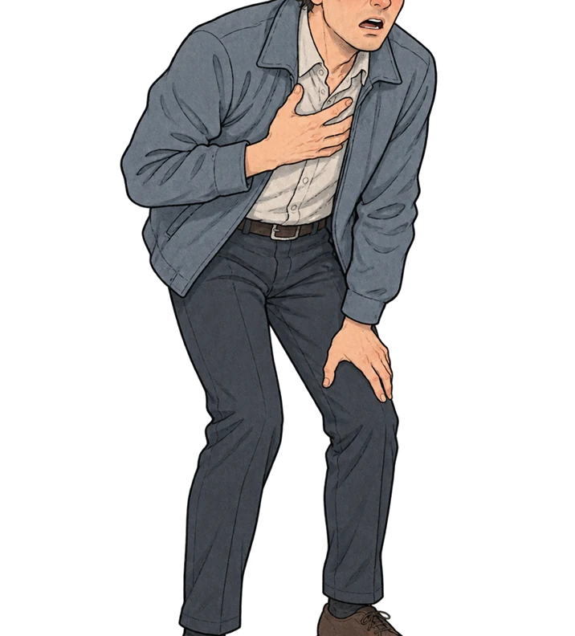

불안장애
공황장애
공황장애는 예상하지 못한 공황발작이 반복되고, 다시 발작할지 모른다는 걱정으로 생활이 달라지는 질환입니다.
발작 중에는 갑자기 강한 두려움과 함께 심장이 빠르게 뛰거나 숨이 차고, 가슴이 답답하거나 땀이 나는 등
몸의 반응이 나타날 수 있습니다. 이런 감각을 큰 위험으로 느끼며 통제력을 잃거나 죽을 것 같은 공포를 경험하기도 합니다.
! 원인
공황장애의 원인은 하나로 확정되지 않았으며, 가족력과 생물학적 특성, 스트레스와 환경 등이 함께 관련됩니다.
위험을 감지하고 신체 반응을 조절하는 뇌의 기능과 신경전달 과정도 연구되고 있습니다. 진료에서는
세로토닌이나 노르에피네프린 등 신경전달 체계뿐 아니라 수면과 생활 습관, 최근의 사건을 살피고,
비슷한 증상을 일으키는 다른 신체 질환이나 약물의 영향이 있는지도 확인합니다.
증상이 시작되기 전에 큰 스트레스를 겪는 분도 있지만 모든 경우에 같은 계기가 있는 것은 아닙니다.
공황장애의 증상
-
SYMPTOM 01
두근거림, 숨이 가빠짐
-
SYMPTOM 02
땀이나거나 떨림
-
SYMPTOM 03
가슴 통증 및 불쾌감
-
SYMPTOM 04
죽음에 대한 공포
-
SYMPTOM 05
어지러움, 메슥거림

강박장애
강박장애는 원하지 않는 생각이 자꾸 떠오르거나, 불안을 줄이기 위한 행동을 반복해 일상에 어려움이 생기는
질환입니다. 생각이나 이미지, 충동이 자신의 의사와 관계없이 되풀이되는 것을 강박사고라고 합니다.
이에 따른 불안을 덜거나 반드시 지켜야 한다고 느끼는 규칙에 맞추기 위해 확인·세척 등의 행동을 반복하거나
속으로 숫자를 세는 등 정신적인 행위를 하는 경우도 있습니다.
! 원인
왜 발생하는지 완전히 밝혀지지는 않았으며 유전적 경향, 뇌의 기능과 발달, 환경의 영향 등이
서로 관련되어 있을 것으로 보고 연구를 이어가고 있습니다.
강박장애의 증상
-
SYMPTOM 01
잦은 손 씻기
-
SYMPTOM 02
순서 지키기
-
SYMPTOM 03
청소하기
-
SYMPTOM 04
강박적 사고
외상 후 스트레스 장애
심각한 사고나 재난, 폭력 등 충격적인 사건을 겪거나 목격한 뒤, 당시 기억과 관련된 반응이 계속되어
괴로운 상태가 이어질 수 있습니다. 사건이 다시 벌어지는 듯 느끼거나 관련 장소와 생각을 피하고,
잠을 이루지 못하거나 과도하게 긴장하는 증상 등이 생활에 영향을 줄 수 있습니다.
! 원인
1) 성장기에 겪은 충격적인 경험
2) 이전부터 있던 마음건강의 어려움
3) 가족과 주변 사람에게 도움받기 어려운 환경
4) 개인의 생물학적 취약성과 가족력
5) 최근의 큰 생활 변화와 지속적인 스트레스, 과도한 음주
외상 후 스트레스 장애의 증상
-
SYMPTOM 01
꿈이나 반복되는
생각으로 외상 재경험 -
SYMPTOM 02
외상과 연관된 상황
회피, 무감각 -
SYMPTOM 03
짜증 증가
-
SYMPTOM 04
집중력 저하
-
SYMPTOM 05
수면 장애
불면증
잠잘 기회와 환경이 갖춰져 있는데도 잠들거나 수면을 유지하기 어렵고, 그 때문에 낮 생활에 불편이 생기는 상태입니다.
잠들기까지 오래 걸리거나 한밤중에 여러 번 깨고, 너무 일찍 깨어 다시 잠들지 못할 수 있습니다.
증상이 잠시 나타나기도 하고 오래 이어지기도 하므로 지속 기간과 빈도, 낮 동안의 영향을 함께 살핍니다.
! 원인
- 생활습관 : 복용하는 약이나 평소 습관이 잠에 영향을 줄 수 있습니다.
늦은 시간의 카페인, 흡연과 음주 등도 수면 상태를 확인할 때 함께 살펴봅니다.
- 수면환경 : 도로와 항공기, 이웃집 생활 소음처럼 잠을 방해하는 자극이 있는지 확인합니다.
조명이 밝거나 방이 지나치게 덥고 추운 경우에도 편하게 잠들기 어려울 수 있습니다.
- 신체 상태 : 수면 중 호흡이 멈추거나 다리가 불편해지는 수면 관련 질환이 잠을 끊는 원인이 될 수 있습니다.
통증과 관절 문제, 속 쓰림, 두통이나 열감 등 다른 신체 증상 때문에 자주 깨는 경우도 있어,
수면 습관뿐 아니라 몸의 건강도 함께 확인합니다.
- 심리 상태 : 우울이나 불안, 지속적인 긴장은 잠드는 데 영향을 줄 수 있습니다.
잠을 못 잘까 걱정하는 마음이 커지면서 수면 문제가 이어지는 경우도 있습니다.
불면증의 증상
-
SYMPTOM 01
쉽게 잠들지 못함
-
SYMPTOM 02
이른 새벽에 잠을 깸
평안숲병원은 상담을 신청하는 분의 개인정보를 보호합니다. 이 방침에서는 홈페이지에 제공한 정보의 사용 목적과 처리 방법, 보관 기간, 열람이나 정정을 요청하는 방법을 설명합니다.
1. 개인정보 수집에 대한 동의
홈페이지에서 상담을 신청할 때에는 개인정보 처리 내용을 먼저 확인할 수 있습니다. 신청자가 수집 항목과 이용 목적을 읽고 동의 항목을 선택한 경우에만 상담 접수를 진행합니다.
2. 개인정보의 수집목적 및 이용목적
홈페이지 문의에 답하고 예약 신청을 확인하기 위해 개인정보를 처리합니다. 접수한 분을 구분하고 연락을 드리는 일, 신청한 서비스의 이행, 오류나 불편사항의 처리, 이용 현황 파악에 필요한 범위에서 사용합니다. 새로운 안내를 받을지 여부는 신청자가 선택할 수 있으며, 기본권을 침해할 우려가 있는 민감정보는 홈페이지에서 요구하지 않습니다. 추가로 필요한 자료가 있다면 그 이유와 항목을 설명하고 별도의 동의를 받습니다.
3. 수집하는 개인정보 항목
상담 신청 화면에서는 이름과 연락처를 입력받습니다. 홈페이지 이용 과정에서는 접속 시각, 이용 기록, 브라우저의 쿠키와 접속 주소 등이 기록될 수 있습니다. 진료나 서류 발급에 필요한 정보는 해당 업무를 접수할 때 별도로 안내하며, 수집 경로는 홈페이지 신청 화면과 병원 접수 창구입니다.
4. 쿠키에 의한 개인정보 수집
쿠키는 홈페이지를 방문할 때 브라우저에 저장되는 작은 정보 파일입니다. 병원은 방문 환경과 이용 상태를 확인하고 일부 설정을 유지하는 데 쿠키를 사용할 수 있습니다. 쿠키에 담긴 정보만으로 방문자 개인을 직접 알아보지는 않습니다. 브라우저 설정에서 저장을 허용하거나, 저장 전에 알림을 받거나, 모든 쿠키를 차단할 수 있습니다. 쿠키를 차단하면 일부 편의 기능이 제한될 수 있으며, 사용 중인 브라우저의 개인정보 설정 메뉴에서 언제든 선택을 바꿀 수 있습니다.
5. 개인정보의 제3자에 대한 제공
받은 정보는 안내한 업무 목적과 동의 범위 안에서만 사용합니다. 법령에 근거가 있거나 이용자가 별도로 동의한 경우를 제외하고 다른 기관에 넘기지 않습니다. 업무를 외부에 맡기거나 제휴기관과 자료를 공유할 필요가 생기면 대상 기관, 전달 항목, 사용 목적과 기간을 먼저 알리고 필요한 동의 절차를 거칩니다.
6. 개인정보의 열람/정정
자신의 정보가 어떻게 기록되어 있는지 확인하거나 잘못된 내용을 고쳐 달라고 요청할 수 있습니다. 개인정보 담당자에게 연락하면 본인 확인을 거쳐 처리합니다. 오류 정정을 신청한 항목은 확인이 끝나기 전까지 업무에 사용하지 않으며, 처리 결과와 사유를 신청한 분께 알려드립니다.
7. 개인정보 수집, 이용, 제공에 대한 동의철회
개인정보 이용에 관한 동의를 철회하려면 홈페이지에 안내된 담당자에게 연락해 주세요. 본인 확인 후 법령에 따라 보관해야 하는 자료가 있는지 살피고, 그 밖의 자료는 삭제하거나 처리를 중단합니다. 철회 요청을 접수한 방법과 같은 방식으로 처리 결과를 알려드립니다.
8. 개인정보의 보유기간 및 이용기간
상담이나 예약을 위해 받은 정보는 해당 업무를 마치고 보관 목적이 끝나면 삭제합니다. 문의를 접수하고 답변한 자료는 상담 처리가 완료된 시점에, 예약과 관련된 자료는 예약 및 후속 업무가 종료된 시점에 정리합니다. 법령상 보관 의무가 있는 자료는 정해진 기간 동안 분리해 보관하며, 더 오래 보관해야 하는 다른 사유가 있다면 항목과 기간을 알리고 동의를 받습니다.
7. 개인정보 관리책임자
개인정보의 처리와 관련해 궁금하거나 불편한 사항이 있으면 아래 담당자에게 알려 주세요. 요청 내용을 확인한 뒤 필요한 조치와 답변 일정을 안내합니다. 정보 열람, 오류 정정, 동의 철회에 관한 신청도 같은 연락처에서 접수합니다.
- [개인정보 관리책임자]
-
담당 : 김진수 전화 : 010-4894-4905
홈페이지를 이용하면서 개인정보 침해가 의심되거나 처리에 대한 설명이 필요하면 개인정보 담당자에게 문의할 수 있습니다. 접수한 내용은 확인 과정을 거쳐 답변하고 필요한 조치를 진행합니다. 병원을 통한 해결이 어렵다면 개인정보 관련 공공 상담기관의 안내를 이용할 수 있습니다. 상담을 신청할 때에는 불편을 겪은 시점과 관련 화면, 원하는 조치를 함께 알려 주시면 확인에 도움이 됩니다.